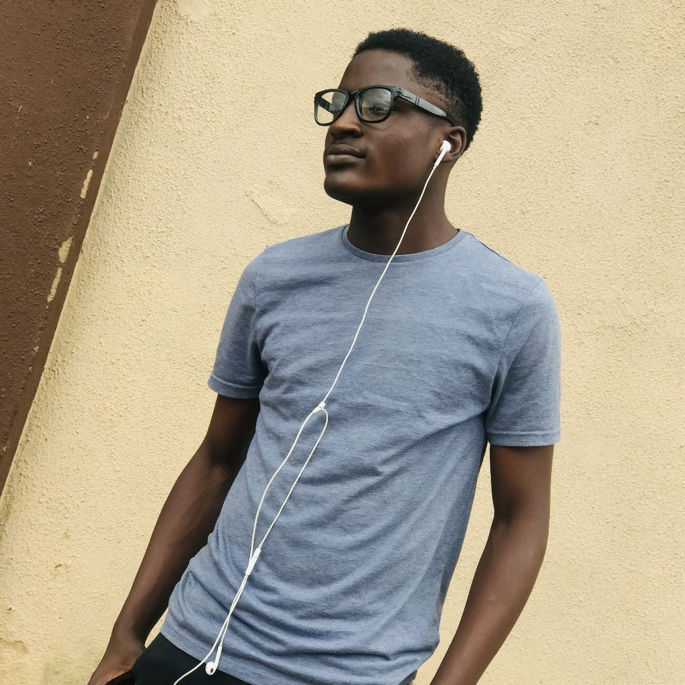

ADESEYOJU ADEFELA

SUMMARY
Ambitious and tech-savvy A'level certified student with a strong passion for web development.
EDUCATION
- O'level, Life Moulders College (2016-2019)
- A'level, OJAJA University (2022-2023)
WORK EXPERIENCE
-
Web Development Intern, [Timest Web] ([2023-2024])
- Assisted in building and maintaining websites using HTML, CSS, and JavaScript
- Collaborated with senior developers to implement new features and resolve issues
- Gained experience with version control systems like Git
- Developed a strong understanding of web development best practices and design principles
-
Freelance Web Developer ([2023-2024])
- Designed and developed websites for small businesses and individuals
- Implemented responsive design and mobile-first approach
- Utilized CSS frameworks like Bootstrap and Tailwind
- Managed client relationships and ensured timely project delivery
-
Web Development Volunteer, [Timest Web] ([2023-2024])
- Contributed to open-source projects and coding initiatives
- Assisted in coding and debugging tasks
- Collaborated with team members to achieve project goals
- Gained experience with agile development methodologies
SKILLS
- HTML, CSS, and JavaScript proficiency
- Excellent communication and teamwork skills
- Quick learner, always looking to stay up-to-date with the latest web development trends and technologies
- Strong problem-solving and analytical skills
- Quick learner, eager to absorb new technologies and programming paradigms
AWARDS AND CERTIFICATIONS
- Best Intern Award (Timest Web, 2023)
- Outstanding Contribution Award (Timest Web, 2024)
- Team Player Award (Timest Web, 2024)
- Certificate of Appreciation (Timest Web, 2024)
- Intern of the Month/Quarter (Timest Web, 2023)
OTHERS